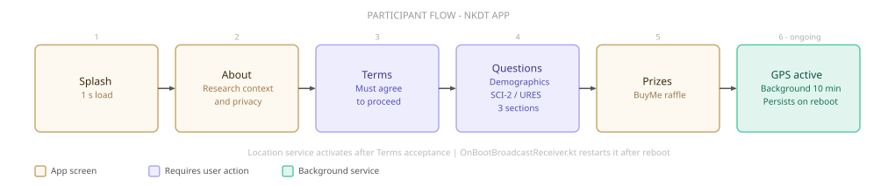

Select a project
to explore.
Research, design, and industry work — all connected by a single thread: using empirical methods to understand how space shapes human behaviour.
Context & Challenge
Architectural theory frequently claims that physical environments shape human communities — yet these assertions rarely move beyond intuition into verifiable, empirical validation. This study aims to tackle this issue.
Under the supervision of Dr. Arch. Gilad Schweid, it establishes a rigorous mixed-method framework to measure how specific micro-spatial features drive or suppress a Sense of Community (SoC) within institutional student housing.
The research leverages a rare natural experiment: Ariel University operates two dormitory compounds on the same campus, serving the same student population, built on radically opposing architectural philosophies, controlling for the social confounders that normally make this kind of research inconclusive.
The Archetypes
Student dormitory design has evolved through three canonical archetypes. The Corridor Plex lines rooms along a shared hallway with communal bathrooms per floor — consistently linked to social overload and withdrawal. The Cluster Plex, still the dominant contemporary model, groups rooms around a small shared suite; it improves privacy but paradoxically scores worse on campus-wide community metrics. The Scattered Plex organizes autonomous units across shared communal grounds, with the spatial relationship between each unit and the landscape defining the compound’s social character — the least studied, and the most promising.


Ariel’s two compounds map directly onto this. The mid-rise compound is a cluster-corridor hybrid: densely packed towers with consolidated indoor amenities — ~1,550 students across 0.033 km². The caravan compound is a scattered plex: ~350 low-rise units distributed across 0.106 km² of organic, pedestrian-first grounds, organised into semi-private sub-clusters surrounded by greenery and shared outdoor space.
Methodology — Two Parallel Tracks
The analysis ran on two parallel tracks designed to cross-validate each other. The qualitative track scored each compound against seven spatial parameters — control, views, and scale (Place Attachment) and strollability, buffers, opportunities, and perception (Informal Contact) — on a 1–5 scale through direct architectural observation benchmarked against the academic literature. The goal: a predicted Sense of Community score based purely on spatial merit.
The quantitative track measured what residents actually experienced, using two validated instruments translated to Hebrew: the University Residence Environment Scale (URES), assessing social climate across ten subscales, and the Sense of Community Index 2 (SCI-2), measuring SoC across four dimensions. Passive GPS telemetry, collected continuously over 47 days via the same app, added a behavioural layer — tracking actual movement through and between compounds to calibrate the self-report data.
Comparing predicted against measured outcomes both validated the spatial framework and surfaced where the two diverged — and why.
The App — NKDT Points
To orchestrate data collection during the pandemic, I co-developed a custom native Android application — NKDT Points — functioning as a live research platform. The app simultaneously administered the psychometric questionnaires remotely and captured continuous passive background GPS telemetry, mapping how residents actually moved through and between the compounds over time.

Privacy-by-Design governed the entire pipeline. Survey responses and spatial telemetry were isolated across decoupled databases from the outset. User identities were obfuscated at device edge via a client-side cryptographic hash crossing hardware IDs with registration timestamps — the only identifier ever transmitted. GPS data was geofenced to city limits; when a participant was detected within their own residential cluster, the app substituted their precise coordinate with a cluster-centroid anchor, preventing hyper-local tracking while preserving compound-level movement data.
Results
The qualitative analysis produced a clear verdict: the caravan compound scored 3.9 / 5 (SD = 0.38, p < 0.01) against the mid-rise’s 2.9 / 5 (SD = 0.35, p < 0.05). Three spatial families accounted for most of the gap: Nature features (free-flowing layout, tree canopy, green sub-clusters), Appeal features (distinctive unit character, resident personalisation, village aesthetic), and Buffer features — the layered private → semi-private → communal → campus hierarchy that gives residents fine-grained control over social exposure. The mid-rise’s inside/outside binary collapses that gradient entirely.
The quantitative results confirmed the direction: caravan residents scored 0.566 normalised on the SCI-2 total index (p < 0.05), mid-rise scored 0.407 — with Membership and Shared Emotional Connection driving the largest differences. GPS telemetry added a calibrating layer: residents spent 83.5% of recorded time within their own building or sub-cluster, reflecting COVID-19’s compression of social opportunity and explaining why both compounds scored lower than the spatial model predicted. The mid-rise cohort was small (n = 3–5), making comparative findings directional — a larger longitudinal follow-up remains the natural next step.
Counter to conventional density-driven assumptions, the analysis revealed a clear statistical advantage for the decentralised Caravan compound. Micro-spatial elements — nature integration, visual appeal, and spatial buffers — proved to be the high-impact drivers of community formation, outperforming structural density.
R&D Framework & Scaling Path
The study is designed as a replicable methodology framework, not a one-off observation. Because universities maintain near-total institutional control over students’ physical environment, student housing represents the ideal live testing sandbox for continuous spatial experimentation — where specific environmental variables can be modified, measured, and iterated on in ways real-world urban settings rarely permit.
This research establishes the instrumentation baseline for exactly that feedback loop: spatial design decisions validated against measurable human outcomes rather than intuition alone. That framework is the direct starting point for the NKDT final project.
Research Analyst
- Engineered a core Python/PySpark automation framework that unified disparate workflow systems into a single automated pipeline, reducing total runtime by 90% and ensuring complete execution validity.
- Architected an end-to-end automation pipeline for self-service systems, eliminating manual engineering intervention and democratising access for non-technical stakeholders.
- Led methodology alignment across a family of analytics products, establishing standardised experimental protocols.
- Partnered with Research Scientists and Engineering teams on backend infrastructure, making architectural decisions balancing performance, efficiency, and scientific rigour.
- Utilised LLM workflows (Claude Code) to accelerate technical knowledge acquisition and streamline complex debugging.
Data Analyst — Systems & Methodology
- Managed end-to-end execution of a $10M+/year technical testing roadmap, ensuring strict algorithmic validity and data integrity across continuous operational pipelines.
- Implemented multi-layered SQL and data automation workflows to guarantee data quality and detect pipeline contamination.
- Collaborated with Research teams to refine methodologies, automate pipelines, and present papers at Yahoo's internal Tech Pulse conference.
Technical Analyst (Student)
- Automated deployment validation pipelines, reducing time-to-production by ~3 days and saving 25+ developer hours per release.
- Conducted machine learning validation research using Python-based validation methodologies.
Publications & Presentations
Overcoming A/B Test Discrepancy Using Nearest Neighbour Data Imputation
Yahoo internal conference — content confidential
Assessing the Incrementality of Enhanced CPC as a Bidding Strategy in the Gemini Platform
Yahoo internal conference — content confidential
Student Dorms Archetype as a Driving Factor in the Formation of a Sense of Community
dx.doi.org/10.13140/RG.2.2.32000.00001 ↗A quantitative data study analysing spatial data and its relation to community formation metrics